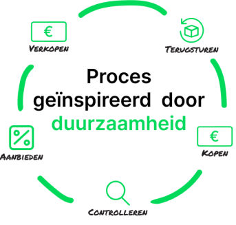

Het proces
Terugsturen
Het proces van Retourgoederen begint met het terugsturen van een product door de klant van een ander bedrijf. Deze producten worden vervolgens vernietigd door bedrijven.
Kopen
Retourgoederen voorkomt dat geretourneerde producten worden vernietigd door deze tegen een voordelige prijs in te kopen.
Controlleren
De ingekochte producten worden vervolgens gecontroleerd op kwaliteit en bruikbaarheid
Aanbieden
Als de kwaliteit en bruikbaarheid is gecontroleerd worden de producten tegen ee voordelige prijs aangeboden in de webshop
Verkopen
De aangeboden producten kunnen worden gekocht door klanten.